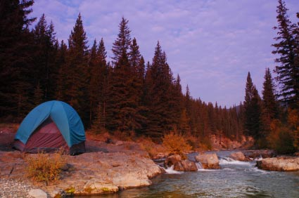

Wilderness Camping

Wilderness camping is a process that involves very few pieces of equipment and a desire to reconnect with nature. For people who camp in this manner on a regular basis, there is no other way to obtain the benefits that wilderness camping provides. If you wonder why wilderness campers are so devoted to their type of camping, here are a few things you should know.
To the avid wilderness camper, camping is a way to disconnect from all the pressures of daily life. This means that modern conveniences and tools are left at home as much as possible. Instead, simplicity is the order of the day. Meals are cooked over an open fire. Shelter is either a simple tent or a structure made with branches and leaves. Pastimes do not include video games or any type of electronic device. In their place are simple entertainment devices such as a musical instrument or a collection of crossword puzzles.
Because of the slower pace, the wilderness camper has the opportunity to reconnect with nature. There is time to enjoy a cool dip in the river or lake, feel sunshine on the skin, and hear the breeze as it passes through the trees. Hearing the common sounds of the woods, such as an owl hooting in the night, helps to soothe edges that are made rough by the noise and general chaos that most people deal with at home and work. In the woods, there is the chance to enjoy peace and quiet in a way that can never be accomplished elsewhere.
Camping in a simple manner also leaves plenty of time to do some deep thinking. It is no surprise that people sometimes turn to a weekend of wilderness camping when some sort of life crisis is taking place. In the quiet, it is often possible to gain new perspectives on situations that seem to be so complicated. An individual who is unsure of how to handle a tough situation may discover a course of action when there are not all sorts of distractions to interfere with his or her thinking processes.
The combination of fresh air and sunshine do more than help to clear the mind. Wilderness camping also helps to give the body and nervous system a chance to function in a natural environment. People who are stressed out or afraid to take a walk around the block at night can enjoy the calming influence of the woods and get as much exercise as they like. Even though they may be more active on the trip, there is a good chance they will return home feeling more refreshed than if they laid around the house all weekend.
It doesn’t take much to enjoy wilderness camping. You don’t need a lot of money or expensive equipment. Just a few essentials that you can easily carry on your back and shoulders will get you through several days. This means that anyone of any culture or economic level can gather the basics needed for a wilderness camping trip. Compare the cost of a weekend of wilderness camping with going out to a movie and enjoying a meal out. The comparison may cause you to wonder why you’ve not thought about wilderness camping before.